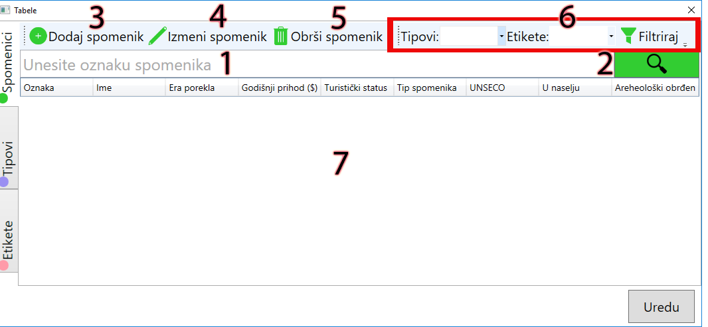

Tabela spomenika
- Pretraga spomenika po oznaci. Krenite da kucate oznaku i ako oznaka spomenika počinje na slova koja ste uneli biće prikazan u tabeli ispod (8)
- Dugme za pretragu
- Dijalog za novi spomenik
- Dijalog za menjanje izabranog spomenika iz tabele (7).
- Briše se izabrani element iz tabele (7).
- Filtriranje - izabrati tip spomenika i/ili etiketu po kojoj želite da filtrirate spomenike iz tabele (7)
